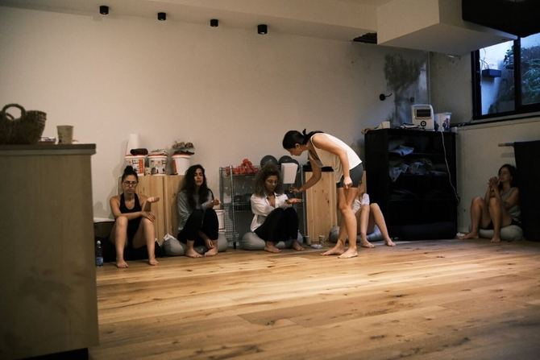
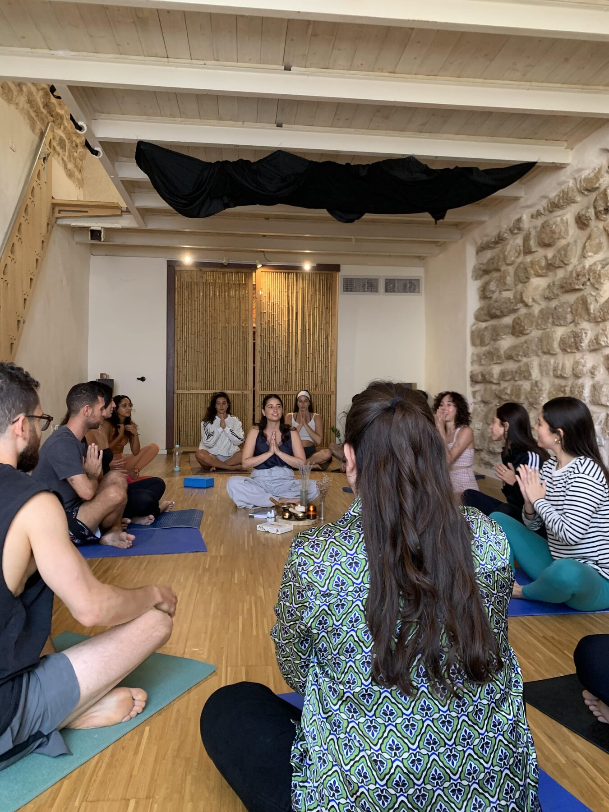
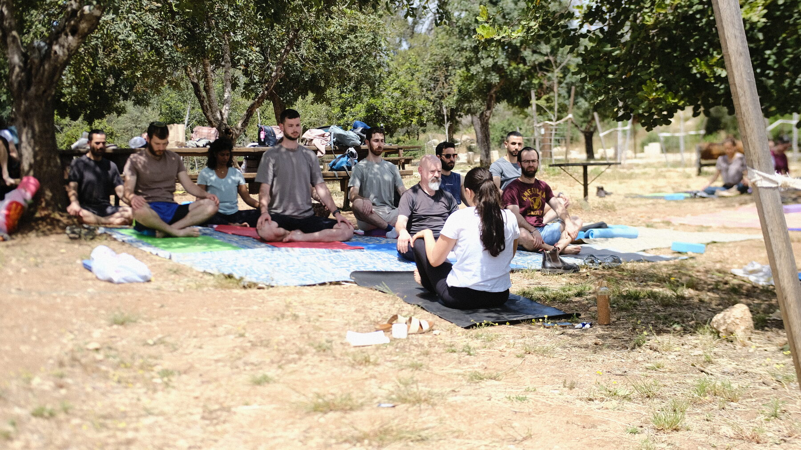
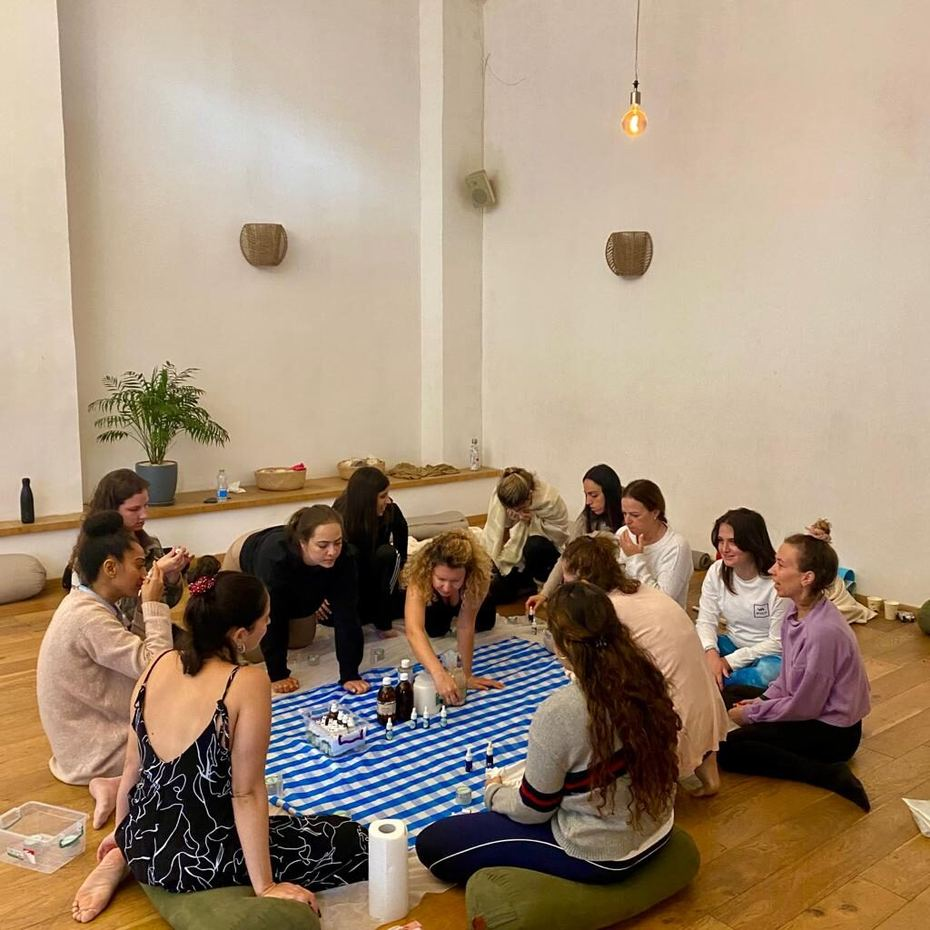
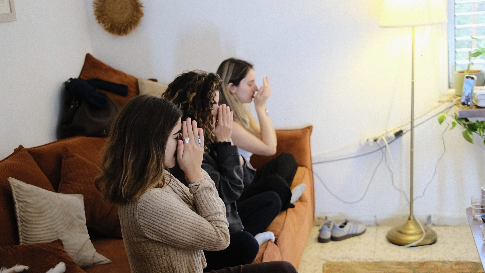
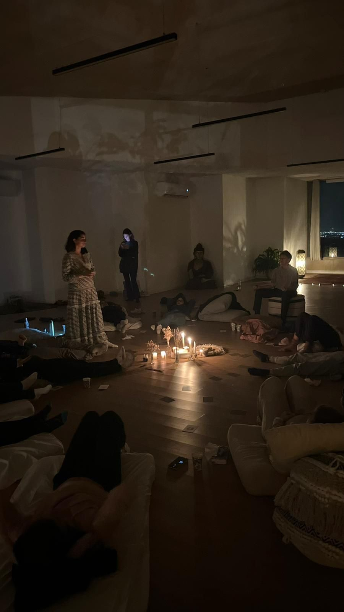

אארומתרפיה חווייתית
נריח ונכיר שמנים אתריים איכותיים, נבין את ההבדלים ביניהם ונלמד איך להשתמש בהם בבית בצורה בטוחה ויעילה.
סדנאות חווייתיות של ארומתרפיה, רוקחות טבעית ויוגה — לקבוצת חברות, למשפחה, לצוות או לארגון. אני מגיעה עם כל הציוד, לכל מקום שתבחרו.

חברות, משפחה, ריטריט, מסיבת רווקות, בת מצווה. אצלי בעמק האלה או אצלכן.
סטודיו, חנות, בית אבות, צוות קטן של מקום מקומי.
עיריות, מוסדות, צוותי חינוך וחברות. מגיעה עם הציוד לכל מקום בארץ.
טיפול, יוגה או סדנה שמגיעים עד הצימר. לפרטים ←
קבוצות מארבע ועד שלושים משתתפות. מעל שלושים — נדבר ונתאים.
בטופס למטה: כמה אתן, איפה, ומה בא לכן. ככה אני מגיעה לשיחה כבר מוכנה.
אני חוזרת אליכן בטלפון, ובונות יחד את הסדנה — התוכן, המשך והמוצרים.
אני מביאה את כל הציוד והחומרים. אתן רק מגיעות ונהנות.





״היה מאוד מהנה ומלמד! כבר פרסמתי לחברות והן עפו על זה. ממליצה בחום.״
״חייבת לעדכן אותך שהשתמשתי בלילות האחרונים בשמן שקיבלנו במתנה בסדנה שלך וההשפעה שלו ממש ניכרת. אני כבר תקופה ארוכה סובלת מחריקות שיניים בלילה ובימים האחרונים זה נעלם.״
נעמה״היי יובל תודה! היית נהדרת! התרגול היה נעים ומותאם לכולם.״
תלוי בסדנה שבחרתן. בארומתרפיה — מריחות ומכירות שמנים ולומדות להשתמש בהם בבית. ברוקחות — גם רוקחות יחד מוצרים שלוקחות הביתה. ביוגה — מתרגלות יחד, בקצב שמתאים לקבוצה. בריטריט יום — יוגה בבוקר וארומתרפיה אחר כך.
אין צורך בידע מוקדם — רק סקרנות וחשק ליצור.
מארבע ועד שלושים. אם אתן יותר — נדבר ונתאים.
בשמחה. העברתי סדנאות לעיריית תל אביב, לצוותי חינוך, לבתי אבות ולחברות. משאירות פרטים בטופס, ואני חוזרת אליכן עם הצעה שמתאימה לצוות.
סדנאות אני מעבירה במקום שאנחנו קובעות מראש — אצלי או אצלכן.
מעת לעת נפתחות סדנאות במועדים קבועים, שאליהן אפשר להצטרף גם ללא קבוצה. לבירור המועדים הקרובים, אשמח שתשלחי לי הודעה.
לבירור מועדיםמשאירות פרטים — ואני חוזרת אליכן בשיחה עם הצעה שמתאימה לכן.